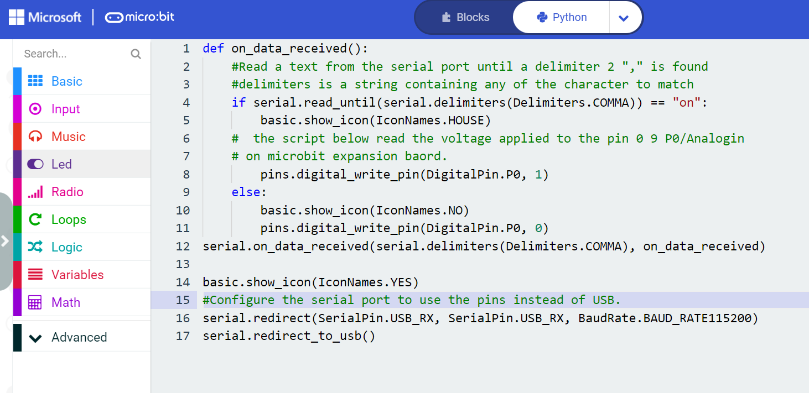
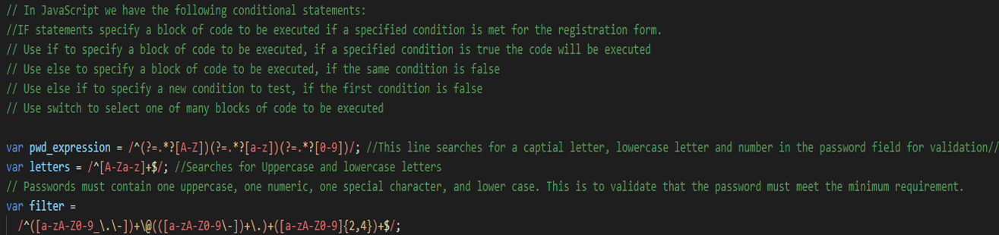

3. Implementation & Testing:
Project Timeline:
The project was managed from start to finish using the project life cycle below, start & end dates were specified.
Investigation Stage:
I captured the details of the user’s requirements to understand the scope of the project and how it could be achieved.
Plan stage
I outlined the timeline and milestones necessary to complete the project.
Design Stage
I translated the actual requirements into technical architect designs, in which I defined the components, programming language, tools, and APIs.
Create Stage:
I focused on writing the actual program and developing the website and database.

Evaluation Stage:
I tested various programs and components to ensure that they worked.

Document Stage:
The main focus was to complete the documentation and to create a zip file containing two subfolders labelled Artefact & Report.

Problems encountered during deployment of the artefacts:
Problem 1:On the Windows computer, the Micro:bit was connecting as a drive called MAINTENANCE instead of MICROBIT and was causing an issue downloading the codes. I downloaded and updated the Micro:bit firmware with Micro:bit V2. Once, updated the Micro:bit worked and I was able to download the codes. |
 |
Problem 2:COM 3 port was not opening, which was required to communicate within the Micro:bit programme. During debugging, I discovered that the other software on the computer was using the COM 3 port. Once the software was disabled/closed, the connection was established with the Database and Micro:bit. |
 |
Operation of the SystemVideo demonstration of the functionality of the Artefact |
| Artefacts | Procedures | Demo |
|---|---|---|
| Auto Fan/HVAC |
1. Prepared the Micro:bit hardware 2. Coded the Micro:bit with python 3. Downloaded the code in Micro:bit. 4: Plugged the Micro:bit to the IoT:bit. 5. Used single USB for power supply to the expansion board and switch off. 4. Attached the Fan and the Temperature sensor with the pin interfaces. 5. Switched on the board. 6. Noted the room temperature and fan turned on. 7. Temperature data captured by the Micro:bit IoT platform sent to the ThingSpeak platform. 8. Viewed live temperature data on ThingSpeak platform and displayed live on the website under “MicroBit Controller” webpage. |
 |
| Remote/Internet Activated Lights |
1. Prepared the Micro:bit hardware. 2. Coded the Micro:bit with python. 3. Downloaded the code in Micro:bit using the USB. 4. Assembled the Micro:bit device with light. 5. Connected the Micro:bit with USB within COM3 port. 6. Using the Turn On/Off button on the “Micro:bit Controller” web page, controlled the LED Lights remotely.
Technical process explained:1: Created a database within the Firebase to check the status of the devices based on the value On/Off.2: Clicked On/Off button on the Web page, the script sent data to the Firebase. 3: Whenever the value was turned On/Off the web page updated the database. 4: The Python script on our Micro:bit read the data and turned the Micro:bit device On/Off as per the value stored within the Firebase database. 5: The web page updated the Firebase database, while the Python script coded within the Micro:bit read the values and controlled the device based on the value. (On/Off) |
 |
Fundamental programming skills demonstrated throughout project:
| Programming Skill | Examples |
|---|---|
Functions:Function was used to enhance the readability and to reduce duplication of the program. |
 |
Algorithms:If statements, functions, and loops were used to collect data from the Firebase. |
 |
Iteration code:Used the while loop for updating the database. |
 |
Database Table:Created Firebase database. |
|
| Datatypes such as Strings were used throughout the programme. | |
Comments:Code was commented. |
 |
Description, Type of Testing and User Cases:
Integration Tests:
To verify that all individuals components that were built work together. The following issues were encountered during the testing, which were later corrected. Please see Pre and post-testing debugs and corrective actions.
| Test Case | Result (Pass/Fail) | Pre - Corrective Action screenshot/ debug | Post –Corrective action | Post Result (Pass/Fail) |
|---|---|---|---|---|
| At the top, click on links to different pages. Verify that the relevant page opens by clicking on each page. | Fail | The page link was fixed after correcting the herf link. . Also added new page.  |
Pass | |
| Verify the password validation rules (Upper case, Lower case, Special character and Numeric letter are required in Password filed). | Pass | N/A. | Pass | |
| Complete the registration form and submit it. Check for the alerts and redirect messages. | Fail | The web page generated the alert message however it did not redirect to the home page. | The "window.location" object used to get the current page (URL) and to redirect the browser to the index page. | Pass |
System & Functional testing:
System testing was carried out to ensure that the whole system and components work as per the requirements. Such as turning on/off the lights through the webpage. Function testing was carried out to ensure that all features worked correctly. Such API testing was carried out to make sure that the graphs updated.
| Test Case | Result (Pass/Fail) | Pre - Corrective Action screenshot/ debug | Post Corrective action | Post Result (Pass/Fail) |
|---|---|---|---|---|
| Firebase Database testing. Check that database shows the value of On/Off once the button is clicked from the website. | Pass | Yes. The lights are turned on and the database changes its value. | N/A | Pass |
| Determine whether the Heating, Ventilation and Air Condition (HVAC) automatically turns On/Off once the temperature reaches the defined level within the Micro:bit code. | Pass | Pass. | N/A | Pass |
| Check that the Graphs display the live Temperature data variation. | Fail |  |
I updated the source code. The website then showed the live data. | Pass |
| While clicking the buttons on the webpage, verify that the Graphs display the Monthly, Weekly, and Daily data. | Pass | Pass. No action required. | N/A | Pass |
Acceptance Testing:
Acceptance testing was to determine that all the functions worked as per user requirements.
| Test Case | Result (Pass/Fail) | Pre-Corrective Action screenshot/ debug | Post Corrective action | Post Result (Pass/Fail) |
|---|---|---|---|---|
| Check if all the functional and design specifications met the user requirements. | Pass | N/A. All worked accordingly, including adaptions made to the HVAC system | N/A | Pass |